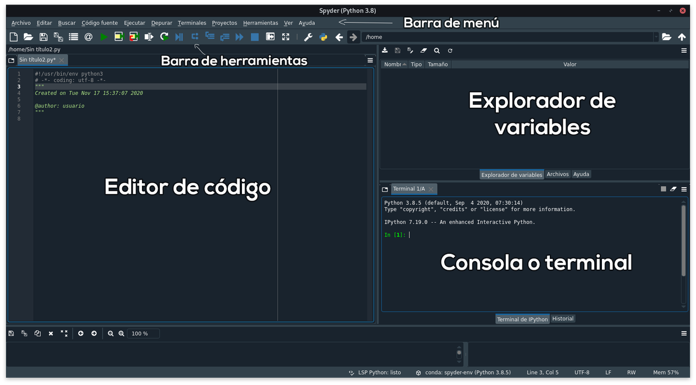

Primeros pasos con Spyder
Si has elegido programar en Python, luego de haberlo instalado quizás te preguntarás; ¿dónde voy a programar? Para esto necesitas un editor de código. Existen muchas opciones de IDE (Entorno de Desarrollo Integrado) que puedes usar, la elección dependerá de la herramienta que te haga sentir comodidad, se adapte a tus necesidades de trabajo y, muy importante, sea sencilla de manejar.
En este post presentamos lo que necesitas saber para utilizar Spyder como entorno de desarrollo para escribir, ejecutar, evaluar e inspeccionar el resultado de tu código escrito en Python.
Básicamente, Spyder (acrónimo de Scientific Python Development Environment) anteriormente conocido como Pydee, es un entorno de desarrollo integrado escrito en Python y, desarrollado para científicos, ingenieros y analistas de datos que empleen este lenguaje de programación. Esta herramienta está liberada bajo la licencia del MIT y se financia gracias al generoso apoyo de NUMFOCUS y QUANSIGHT.
Características y funcionalidades de Spyder
-
Es multiplataforma y de código abierto.
-
Es multilenguaje.
-
Cuenta con edición avanzada.
-
Tiene depuración integrada y ejecución interactiva.
-
Ofrece capacidades de visualización.
-
Provee de funcionalidades para análisis de código como coloreado de sintaxis.
-
Es multiconsola.
-
Incluye instrumentos para el control de calidad y el análisis de códigos específicos de Python, como Pyflakes, Pylint y Rope.
-
Contiene varios paneles que facilitan el trabajo: editor de código, explorador-editor de variables y la consola.
-
Permite extender sus funcionalidades a través de plugins. Entre ellos:
-
Spyder Notebook plugin. Para usar los cuadernos Jupyter dentro de Spyder.
-
Spyder Terminal. Muestra una terminal virtual dentro de la ventana principal de Spyder.
-
Spyder reports. Permite generar informes de Markdown utilizando Pweave como backend.
-
Spyder-autopep8. Complemento para ejecutar autopep8 (el linter de python) dentro de Spyder.
-
Está en continua evolución y soporte gracias a una gran comunidad de desarrolladores y usuarios.
-
Permite trabajar en varios proyectos simultáneamente.
-
Con Spyder puedes tomar atajos de teclado.
-
Posee documentación en línea y tutoriales para que aprendas a utilizarlo.
Instalación y primeros pasos
Para trabajar con Spyder tienes algunas opciones, entre las más comunes están:
-
Spyder online, permite que trabajes con una copia de Spyder que se ejecuta directamente en tu navegador web, es decir, no es necesaria su instalación. Esto es posible gracias a Binder. Si deseas probarlo debes acceder a la página de Spyder en Binder.
-
Empleando Anaconda o Miniconda. Spyder viene incluido, por defecto, en estas distribuciones. Esta es la forma más fácil de instalarlo y lo recomendamos para evitar cualquier inconveniente.
-
Puedes instalarlo también usando pip o conda en tu entorno local con los siguientes comandos
conda install -c anaconda spyderopip install spyder. La documentación oficial del proyecto te ofrece una guía de instalación que te será de gran ayuda si surgen dudas.
Ya tengo Spyder, ahora cómo lo uso
Para correr Spyder en Windows, dirígete al menú Inicio y luego busca la
aplicación de Spyder. En Linux, si instalaste Spyder usando Anaconda o
Miniconda, puedes acceder buscando su nombre en tu ícono de Menú. Si deseas
hacerlo utilizando la línea de comandos, en Windows abre Anaconda Prompt y haz
clic en Spyder. En las demás plataformas accede a una ventana del terminal y
teclea conda activate nombre_entorno (en su defecto, nombre_entorno es base
para activar tu entorno de trabajo local; o coloca el nombre del entorno donde
instalaste spyder) y luego escribe spyder.
Veamos ahora lo que te ofrece esta interfaz:
Viene con un Editor para escribir código, una Consola (IPython Console) para evaluarlo, ver sus resultados en cualquier momento y consultar el historial de comandos, un Explorador de Variables para ver qué variables se han definido durante la evaluación, que cuenta con botones de ayuda para cualquier comando y explorador de archivos.

Como puedes observar, del lado izquierdo tenemos el Editor de código. En la parte superior derecha se encuentran las pestañas: Explorador de variables, Explorador de archivos, Ayuda. En la parte inferior derecha tenemos: El intérprete interactivo de Python (IPython Console) y El historial de comandos.
La barra de Menú se encuentra en la parte superior y debajo de ella la barra de herramientas. Esta última contiene botones que permiten realizar distintas acciones como crear un archivo, ejecutarlo, entre otros.
Básicamente, escribimos nuestros programas en el Editor y lo ejecutamos pulsando
F5 (asimismo para ejecutar cualquier archivo en spyder), el resultado aparece en
el Intérprete Interactivo (consola). Si se definen variables y objetos, estos
aparecen en el Explorador de Variables. En caso de requerir un archivo
adicional, accede al Explorador de archivos. Los archivos generados en Spyder se
guardan, por defecto, con extensión .py.
Al iniciar Spyder, puedes comenzar a trabajar en la ventana de la consola, si lo deseas. Estás en la potestad de cambiar los paneles de lugar y su diseño según tus preferencias.
A continuación te mostramos de una manera sencilla cómo hacer para crear, abrir y guardar un archivo en spyder y como ejecutar un script:
-
Para Crear un nuevo archivo, elige una de las siguientes opciones:
-
Accede a la barra de Menú, haz clic en Archivo y luego en Nuevo.
- Presiona las teclas Ctrl + N.
-
Haz clic en el botón Nuevo Archivo de la barra de herramientas.
-
Si deseas Guardar un archivo, elige entre:
-
Hacer clic en Archivo y luego en Guardar en la barra de Menú.
- Presionar las teclas Ctrl + S.
-
Dar clic en el botón Guardar Archivo de la barra de herramientas.
-
Para Abrir un archivo
.pyexistente tienes varias alternativas: -
Dirígete a la barra de Menú, haz clic en Archivo, luego en Abrir, después busca el archivo que desees.
- Presiona Ctrl + O.
- En la barra de herramientas, haz clic en el botón Abrir archivo. Luego se abre una ventana donde buscarás la ubicación, luego selecciona el archivo deseado y haz clic en Abrir. Posteriormente, se mostrará el archivo en el Editor de Código.
Te hemos presentado lo que debes saber para iniciarte en Spyder, esperamos que sea de provecho para tus proyectos. Anímate a usar este potente y popular Entorno de Desarrollo.
Comentarios
Comments powered by Disqus